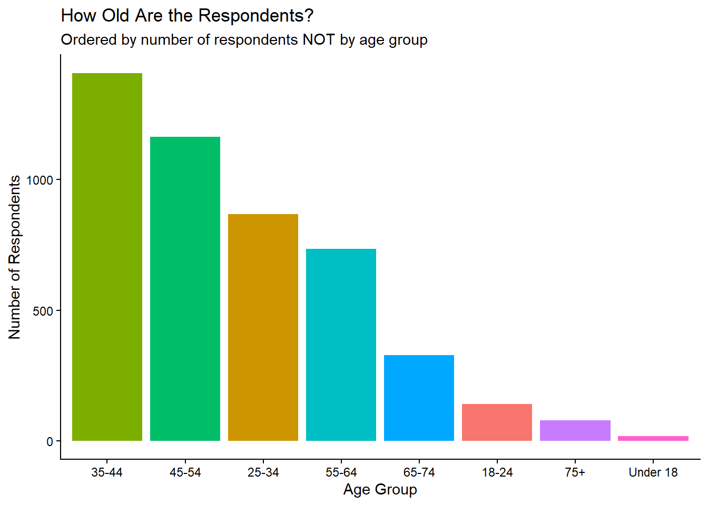
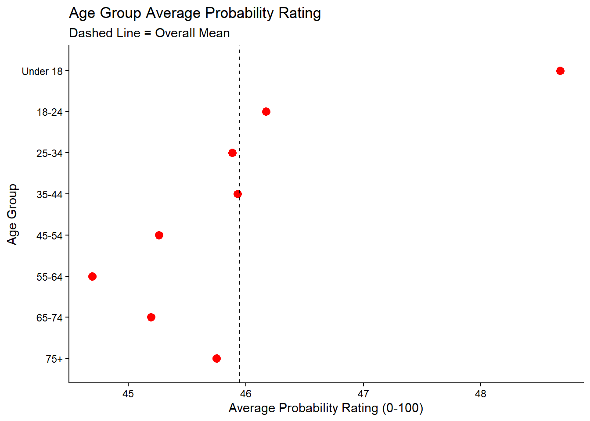
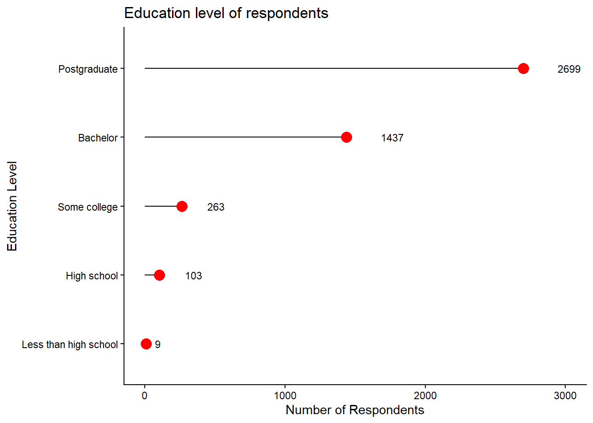
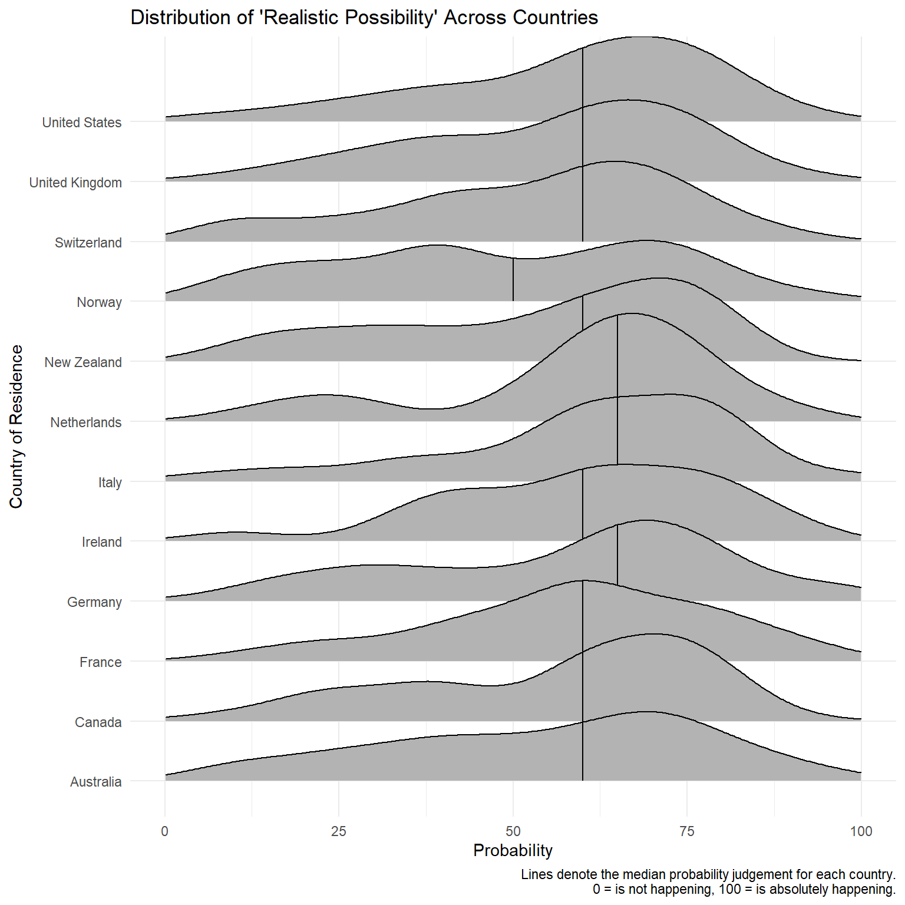

absolute <- readr::read_csv("absolute.csv")
pairwise <- readr::read_csv("pairwise.csv")
respondents <- readr::read_csv("respondents.csv")SQL Project: Probability Language
Oliver Reece and I used TidyTuesday survey data on probability language to build a small DuckDB database, write SQL queries against it, and visualize how people map phrases like “realistic possibility” or “little chance” onto numeric probability.
The source QMD and local data files live in this page’s repo folder, learning/datacomp/sql/.
Artifacts
Accessing data
For our analysis, we have chosen to go with 3 csv files containing answers to an online survey regarding subjective judgements of likeliness. The absolute dataset contains responses to a task asking respondents to rank various statements about probability, like might happen, little chance, etc… on a scale from 0 (not happening at all) to 100 (certainly would happen). Additionally, the pairwise dataset contains responses to “which term represents a higher probability” questions. Finally, the respondents dataset contains some simple demographic questions. The dataset is available as a part of Tidytuesday, and can be accessed using this link.
A good data scientist always checks the data they import.
summary(absolute) response_id term probability order
Min. : 4 Length :98306 Min. : 0.00 Min. : 1
1st Qu.:1297 N.unique : 19 1st Qu.: 10.00 1st Qu.: 5
Median :2590 N.blank : 0 Median : 50.00 Median :10
Mean :2590 Min.nchar: 6 Mean : 45.56 Mean :10
3rd Qu.:3884 Max.nchar: 21 3rd Qu.: 75.00 3rd Qu.:15
Max. :5177 Max. :100.00 Max. :19 summary(pairwise) response_id pair_id term1 term2
Min. : 4 Min. : 1.0 Length :51740 Length :51740
1st Qu.:1297 1st Qu.: 3.0 N.unique : 19 N.unique : 19
Median :2590 Median : 5.5 N.blank : 0 N.blank : 0
Mean :2590 Mean : 5.5 Min.nchar: 6 Min.nchar: 6
3rd Qu.:3884 3rd Qu.: 8.0 Max.nchar: 21 Max.nchar: 21
Max. :5177 Max. :10.0
selected
Length :51740
N.unique : 19
N.blank : 0
Min.nchar: 6
Max.nchar: 21
summary(respondents) response_id timestamp age_band english_background
Min. : 4 Length :5174 Length :5174 Length :5174
1st Qu.:1297 N.unique : 2 N.unique : 8 N.unique : 3
Median :2590 N.blank : 0 N.blank : 0 N.blank : 0
Mean :2590 Min.nchar: 7 Min.nchar: 3 Min.nchar: 28
3rd Qu.:3884 Max.nchar: 7 Max.nchar: 8 Max.nchar: 52
Max. :5177 NAs : 437 NAs : 421
education_level country_of_residence
Length :5174 Length :5174
N.unique : 5 N.unique : 64
N.blank : 0 N.blank : 0
Min.nchar: 8 Min.nchar: 4
Max.nchar: 21 Max.nchar: 30
NAs : 663 NAs : 720 Perusal of the dataset shows that the absolute and pairwise datasets do not allow for NA entries at all. On the other hand, text fields for respondents do allow for missing data. This is important for database creation purposes, which we will use duckdb for.
Designing the database
Now we invoke duckdb and establish a connection to our new database.
con_prob <- DBI::dbConnect(duckdb::duckdb(), dbdir = ":memory:")DROP TABLE IF EXISTS absolute;
DROP TABLE IF EXISTS pairwise;
DROP TABLE IF EXISTS respondents;We now create the tables on the database. Some motivation for the codechunk below:
given that this is only 2 months worth of observations, going with INTEGER for response_id seems reasonable.
other numeric variables only go from 0-100 and 1-19
in
absolute, each respondent will get presented with a term once –> unique row. Additionally, a valid row would need to have a respondent, and a term they are presented with to rank. This means that whileprobabilitycan be NULL, other terms cannot.in
pairwise, each participant gets presented with a pair of terms only once –> unique row. Similarly, a respondent might not choose a term between a presented pair, but each row would need to have a respondent identifier, and contain info about the pair they are presented with.in
respondents, there are columns where 255 characters were not needed (liketimestamporcountry_of_residence). I’ve chosen to limit the character count to 60 for those columns.
CREATE TABLE absolute (
response_id INTEGER NOT NULL,
term VARCHAR(255) NOT NULL,
probability TINYINT DEFAULT NULL,
"order" TINYINT NOT NULL,
PRIMARY KEY (response_id, term)
);
CREATE TABLE pairwise (
response_id INTEGER NOT NULL,
pair_id INTEGER NOT NULL,
term1 VARCHAR(255) NOT NULL,
term2 VARCHAR(255) NOT NULL,
selected VARCHAR(255) DEFAULT NULL,
PRIMARY KEY (response_id, pair_id)
);
CREATE TABLE respondents (
response_id INTEGER NOT NULL,
"timestamp" VARCHAR(60) NOT NULL,
age_band VARCHAR(60) DEFAULT NULL,
english_background VARCHAR(255) DEFAULT NULL,
education_level VARCHAR(60) DEFAULT NULL,
country_of_residence VARCHAR(60) DEFAULT NULL,
PRIMARY KEY (response_id)
);Having created the tables, we can now copy the contents of the csv’s onto the tables in our database:
COPY absolute FROM 'absolute.csv' (FORMAT CSV, HEADER, NULL 'NA');
COPY pairwise FROM 'pairwise.csv' (FORMAT CSV, HEADER, NULL 'NA');
COPY respondents FROM 'respondents.csv' (FORMAT CSV, HEADER, NULL 'NA');The fingers are crossed, and the database seems to be working properly.
Querying data using SQL
Binh’s queries
Query 1: examining the distribution of education background among respondents
SELECT education_level, COUNT(*) AS n
FROM respondents
WHERE education_level IS NOT NULL
GROUP BY education_level
ORDER BY n DESC| education_level | n |
|---|---|
| Postgraduate | 2699 |
| Bachelor | 1437 |
| Some college | 263 |
| High school | 103 |
| Less than high school | 9 |
The distribution seems to be a little lopsided - respondents from a high educational background seems to be overrepresented in this dataset compared to the population average.
Query 2: examining the highest (absolute) probability assigned to each term
SELECT term, MAX(probability) AS max_prb
FROM absolute
GROUP BY term| term | max_prb |
|---|---|
| Likely | 100 |
| Realistic Possibility | 100 |
| Little Chance | 99 |
| Unlikely | 100 |
| Almost Certain | 100 |
| Will Happen | 100 |
| Might Happen | 100 |
| Remote Chance | 100 |
| May Happen | 100 |
| Highly Unlikely | 100 |
Given that this is a small subset of the online survey, it’s reasonable to assume that there might be some data quality concerns.
Query 3: which terms win the most often in pairwise comparisons?
SELECT selected AS term, COUNT(*) AS n_wins
FROM pairwise
GROUP BY selected
ORDER BY n_wins DESC| term | n_wins |
|---|---|
| Will Happen | 5274 |
| Highly Likely | 4771 |
| Almost Certain | 4700 |
| Very Good Chance | 4458 |
| Probable | 4128 |
| Likely | 3911 |
| Better than Even | 3633 |
| Realistic Possibility | 3485 |
| About Even | 2689 |
| May Happen | 2641 |
Pairwise comparisons jointly create a reasonable order of terms(?)
Query 4: which terms have the highest variance in absolute probability among American respondents?
SELECT term, VAR_SAMP(probability) AS var_prob
FROM absolute JOIN respondents ON absolute.response_id = respondents.response_id
WHERE country_of_residence = 'United States'
GROUP BY term
ORDER BY var_prob desc| term | var_prob |
|---|---|
| Realistic Possibility | 413.6271 |
| Could Happen | 316.8297 |
| Might Happen | 284.6066 |
| May Happen | 268.9883 |
| Highly Unlikely | 170.7584 |
| Improbable | 158.4131 |
| Probable | 148.2369 |
| Unlikely | 139.4656 |
| Chances are Slight | 125.6742 |
| Highly Likely | 112.6015 |
Very illuminating: before planning something, it might be good to ensure you and your friend align on what a “realistic probability” actually is.
Oliver’s Queries:
Query 1: How consistent is each respondent in their probability ratings?
SELECT response_id, AVG(probability) AS AvgRating, STDDEV(probability) AS ProbStdDev, COUNT(*) AS n
FROM absolute
WHERE probability IS NOT NULL
GROUP BY response_id
ORDER BY ProbStdDev;| response_id | AvgRating | ProbStdDev | n |
|---|---|---|---|
| 4572 | 0.000000 | 0.0000000 | 19 |
| 1701 | 1.052632 | 0.4046513 | 19 |
| 139 | 80.526316 | 6.4322833 | 19 |
| 2512 | 64.210526 | 11.9423567 | 19 |
| 4672 | 46.052632 | 12.8645667 | 19 |
| 3855 | 77.894737 | 14.1731151 | 19 |
| 5007 | 82.526316 | 17.0044714 | 19 |
| 5164 | 66.578947 | 17.2572554 | 19 |
| 4331 | 76.052632 | 17.8153295 | 19 |
| 2341 | 50.263158 | 19.2031308 | 19 |
Interesting - it seems that some respondents are very consistent in their responses, like 1701 and 139, yet the range of consistency is vast. Confirms that responses are somewhat random and arbitrary.
Query 2: How many times did each term show up in a pairwise comparison?
SELECT term1 AS term, COUNT(*) AS n
FROM pairwise
GROUP BY term
ORDER BY n DESC;| term | n |
|---|---|
| Remote Chance | 3024 |
| About Even | 3020 |
| Improbable | 2914 |
| Almost No Chance | 2894 |
| Highly Unlikely | 2867 |
| Better than Even | 2771 |
| Realistic Possibility | 2764 |
| Likely | 2740 |
| Little Chance | 2735 |
| Might Happen | 2725 |
This tell us that Binh’s Query 3 result is further valid as the distribution is mostly fair across pairwise comparisons. It also tells us that the survey was pretty fair in the number of times each term showed up as term 1, which does impact bias.
Query 3: How old are the respondents? What age group responded most?
SELECT age_band AS age_group, COUNT(*) AS n
FROM respondents
WHERE age_group IS NOT NULL
GROUP BY age_group
ORDER BY n DESC;| age_group | n |
|---|---|
| 35-44 | 1405 |
| 45-54 | 1163 |
| 25-34 | 868 |
| 55-64 | 734 |
| 65-74 | 328 |
| 18-24 | 141 |
| 75+ | 79 |
| Under 18 | 19 |
Mainly middle aged respondents. Makes sense as younger people are probably less likely to fill out a survey. That being said, it means the findings from the survey are going to be reflective of middle-aged adults’ perception on the words, not necessarily the whole population (35-54yr olds make up roughly 54% of respondents).
Query 4: Do different ages have different average probability ratings?
SELECT r.age_band AS age_group, AVG(a.probability) AS AvgProb
FROM absolute a
JOIN respondents r ON a.response_id = r.response_id
WHERE r.age_band IS NOT NULL AND a.probability IS NOT NULL
GROUP BY age_group
ORDER BY AvgProb DESC;| age_group | AvgProb |
|---|---|
| Under 18 | 48.67313 |
| 18-24 | 46.17245 |
| 35-44 | 45.92943 |
| 25-34 | 45.88328 |
| 75+ | 45.74950 |
| 45-54 | 45.25967 |
| 65-74 | 45.19320 |
| 55-64 | 44.69188 |
note: have to use original name of variable or an error message is thrown.
analysis: In contrast to my last query, it seems age has little effect on how the terms are perceived. As such, it isn’t AS much of a worry that the age of respondents is highly concentrated on middle aged adults.
Creating data visualizations
vis1 <- dbGetQuery(con_prob,
"SELECT age_band AS age_group, COUNT(*) AS n
FROM respondents
WHERE age_band IS NOT NULL
GROUP BY age_band
ORDER BY n DESC")
ggplot(vis1, aes(x = reorder(age_group, -n), y = n, fill = age_group)) +
geom_col(show.legend = FALSE) +
labs(
title = "How Old Are the Respondents?",
subtitle = "Ordered by number of respondents NOT by age group",
x = "Age Group",
y = "Number of Respondents",
) +
theme_classic()
vis2 <- dbGetQuery(con_prob,
"SELECT r.age_band AS age_group, AVG(a.probability) AS AvgProb
FROM absolute a
JOIN respondents r ON a.response_id = r.response_id
WHERE r.age_band IS NOT NULL AND a.probability IS NOT NULL
GROUP BY age_group
ORDER BY AvgProb DESC")
vis2 <- vis2 |>
mutate(age_group = factor(age_group, levels = c("75+", "65-74", "55-64", "45-54", "35-44", "25-34", "18-24", "Under 18")))
ggplot(vis2, aes(x = AvgProb, y = age_group)) +
geom_point(size = 3, color = "red") +
geom_vline(xintercept = mean(vis2$AvgProb), linetype = "dashed", color = "black") +
labs(
title = "Age Group Average Probability Rating",
subtitle = "Dashed Line = Overall Mean",
x = "Average Probability Rating (0-100)",
y="Age Group"
) +
theme_classic()
vis3 <- dbGetQuery(con_prob,
"SELECT education_level, COUNT(*) AS n
FROM respondents
WHERE education_level IS NOT NULL
GROUP BY education_level
ORDER BY n DESC")
ggplot(vis3, aes(x = n, y = reorder(education_level, n))) +
geom_segment(aes(x = 0, xend = n,
y = reorder(education_level, n),
yend = reorder(education_level, n)), color = "black") +
geom_point(size = 4, color = "red") +
geom_text(aes(label = n), hjust = -1.5, size=3) +
scale_x_continuous(limits=c(0,3000)) +
labs(
title = "Education level of respondents",
x="Number of Respondents",
y="Education Level",
) +
theme_classic()
Binh’s visualization: How variable is “Realistic Probability”, actually?
First, we pull the query from
dbGetQuery.Then, we use Ridgeline Plots from
ggridges()to get a better feel for the distribution of “Realistic Possibility” across different countries. Boxplots were initially considered, but ultimately discarded in favor of Ridgeline plots, since the latter is better able to visualize the actual distribution of probabiilty judgements.
bData <- dbGetQuery(con_prob, "SELECT term, respondents.response_id, probability, country_of_residence FROM absolute JOIN respondents ON absolute.response_id = respondents.response_id WHERE term = 'Realistic Possibility' AND country_of_residence IS NOT NULL")
# Initial graph didn't look too hot, so filtering to countries w more than 30 responses
bData30 <- bData |>
group_by(country_of_residence) |>
filter(n() > 30) |>
ungroup()
ggplot(bData30, aes(x = probability, y = country_of_residence)) +
labs(x = "Probability",
y = "Country of Residence",
title = "Distribution of 'Realistic Possibility' Across Countries",
caption = "Lines denote the median probability judgement for each country.\n 0 = is not happening, 100 = is absolutely happening.") +
xlim(0,100) +
geom_density_ridges(quantile_lines = TRUE, quantiles = 2) +
theme_minimal()
We can see that the distribution of probability judgments for the term “Realistic Possibility” is incredibly wide across all countries, ranging between all possible values on the scale. Interestingly, there seems to be some convergence on the median judgment value of the term - most countries seem to have a median probability of about 60 for the term.
Disconnect
DBI::dbDisconnect(con_prob, shutdown = TRUE)